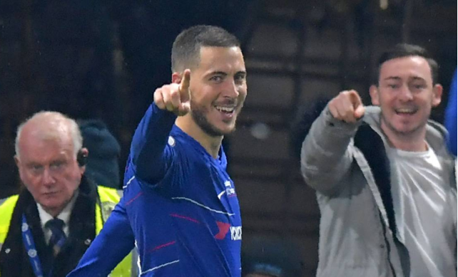

Hazard, sobre ir al Madrid: "Ya veremos al final de temporada"
El belga hizo estas declaraciones a Sky Sports tras un espectacular partido en el que hizo dos goles y dio el tercer puesto al Chelsea.
Maurizio Sarri, entrenador de Hazard en el Chelsea, habló al final del partido sobre la situación de su estrella: "Si Hazard quiere tener otra experiencia es muy difícil mantenerlo aquí. ¿100 millones de libras? Me parece demasiado barato, en este mercado es muy barato". También habló Eden Hazard del Real Madrid al finalizar el partido que el Chelsea disputó ante el West Ham y en el que recuperó la tercera plaza tras ganar 2-0 con un doblete de la estrella belga. El delantero habló en Sky Sports, donde fue preguntado por los cánticos que le dedicó la afición rival durante todo el partido ("Hazard se va al Madrid"). El periodista se dirigió al internacional sugiriéndole si ellos sabían ya algo que desconocía el resto, a lo que el jugador respondió con humor y sin descartar en ningún momento un acuerdo que ya está cerrado entre club y jugador pero que debe tener el visto bueno de Abramovich. La conversación literal fue la siguiente: Reportero: “La afición del Chelsea se pasó todo el partido gritando ‘Hazard se va al Madrid’… ¿Ellos saben algo que no sabemos?” Hazard: “(Se ríe). No, ellos están equivocados. Yo ahora estoy concentrado en el Chelsea hasta el final de la temporada. Sólo quiero terminar la temporada bien, entre los cuatro primeros de la Premier. Tenemos la Europa League. Hay mucho todavía que hacer. Ahí, entonces, ya veremos". Ya es vox populi que Hazard es uno de los objetivos prioritarios de Zidane para renovar al Madrid. As ya ha venido informando en las últimas semanas que el precio de salida para poder cerrar su fichaje superará los 100 millones de euros. Con este doblete, Hazard ha participado en 31 tantos del Chelsea: 19 los marcó él y en 12 dio la asistencia.